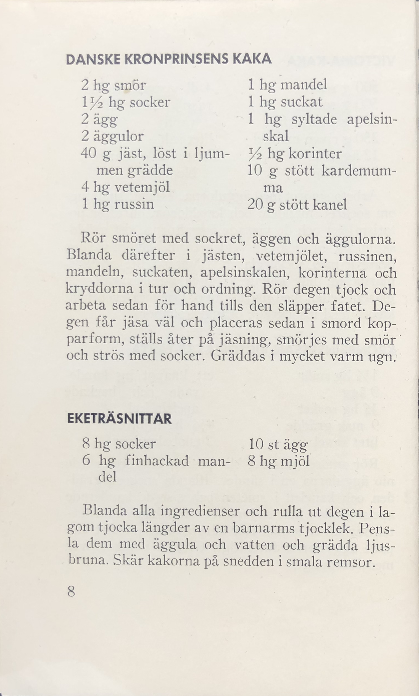
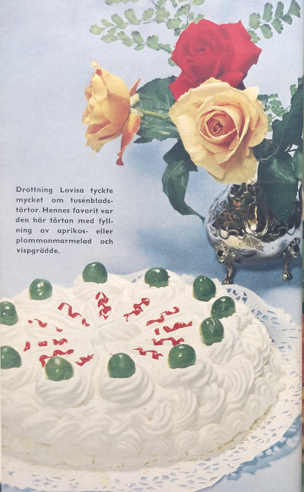
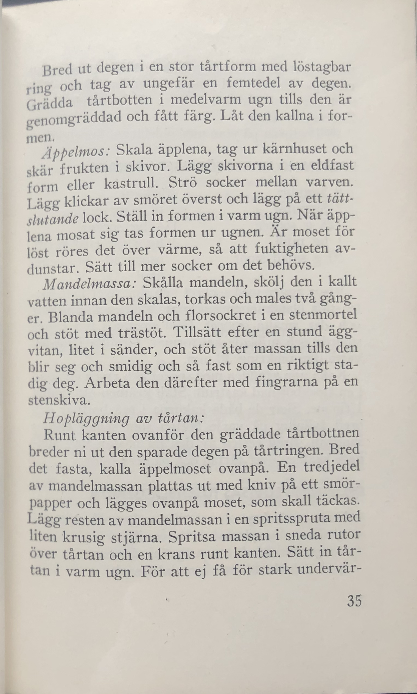
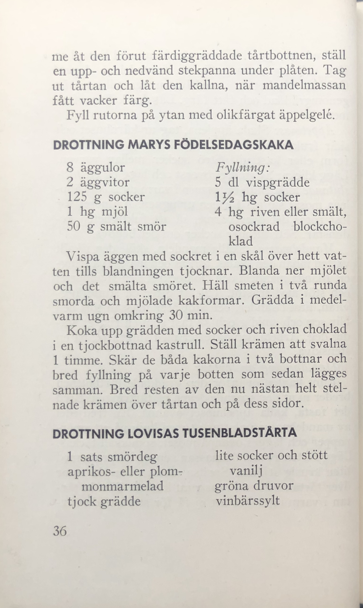
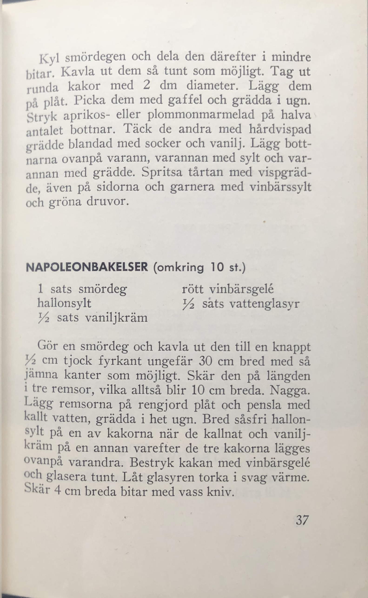
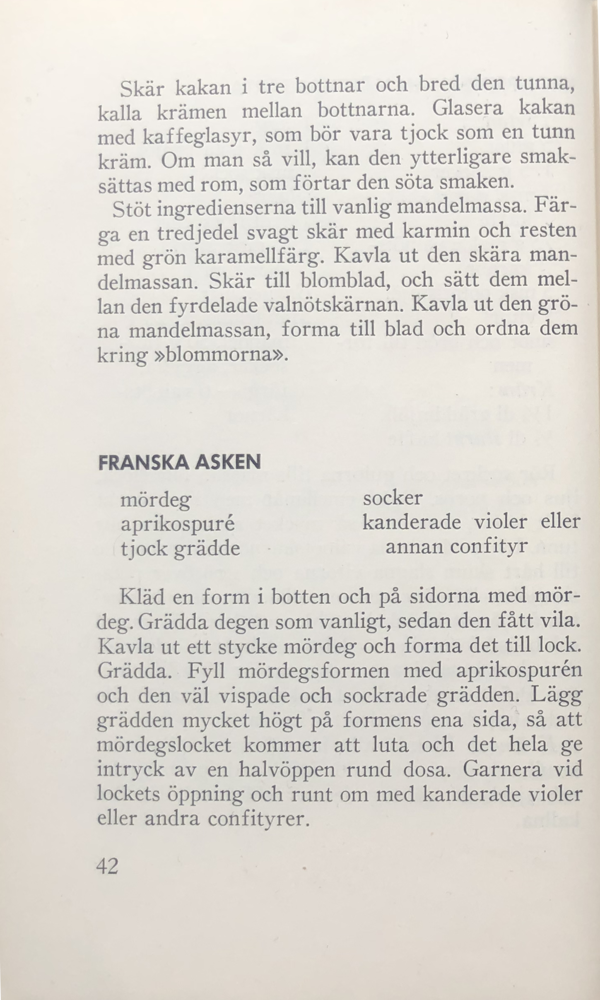
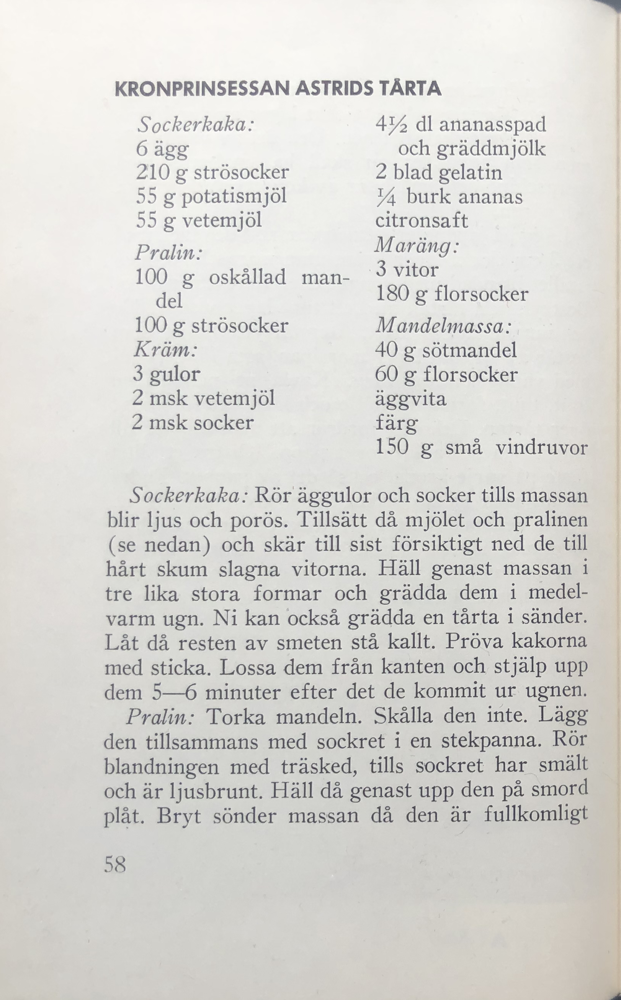
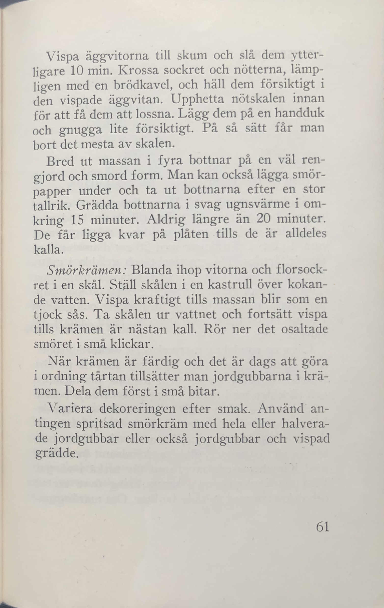

PRINSESSORNAS
KAKBOK
PRINSESSORNAS
KAKBOK

Prinsessornas
Kakbok
UTGIVEN AV
HUSMODERN
RECEPTEN INSAMLADE AV
ANDERS LUNDEBECK
OCH
SIGYN REIMERS

Några av recepten är hämtade ur
Prinsessornas kokbok
Paul Arbin: Kungliga rätter
Einar Nerman: Celebriteter och läckerheter
ÅHLÉN & ÅKERLUNDS TRYCKERIER • STOCKHOLM 1960

500 g smör 4 dl vispad grädde
500 g socker rasp av citron eller
350 g potatismjöl vanilj
250 g riven mandel litet salt
12 äggulor insockrade orange-
7 äggvitor blommor
1½ hg smör ett knappt hg kande-
9 ägg rade och hackade
¾ hg socker apelsinskal
9 msk grädde 4½ hg mjöl
litet kanel 2 tsk bakpulver

2 hg smör 1 hg mandel
1½ hg socker 1 hg suckat
2 ägg 1 hg syltade apelsin-
2 äggulor skal
40 g jäst, löst i ljum- ½ hg korinter
men grädde 10 g stött kardemum-
4 hg vetemjöl ma
1 hg russin 20 g stött kanel
8 hg socker 10 st ägg
6 hg finhackad man- 8 hg mjöl
del
8


⅓ l gräddmjöl 20 ägg
550 g vetemjöl 50 g jäst
100 g smör plus litet socker och hackad
extra till späckning mandel
4 hg vetemjöl 2 hg smör
4 hg havremjöl litet varmt vatten
16

Kungliga bröllop har gett
upphov till många läckra
bakverk. Den här tårtan,
som smakar ljuvligt gott
av mandel, nötter och
smörkräm, komponera-
des till dåvarande prin-
sessan Ingrids lysning.

Drottning Lovisa tyckte
mycket om tusenblads-
tårtor. Hennes favorit var
den här tårtan med fyll-
ning av aprikos- eller
plommonmarmelad och
vispgrädde.


15 äggulor 200 g sötmandel, ma-
400 g socker len
350 g potatismjöl ett par bittermandlar
400 g smör eller mar- rivet citronskal
garin, smält
10 äggvitor Till fyllning:
5 hg florsocker sylt och grädde,
5 droppar cedroessens smaksatt med cedro-
olja eller vanilj
26

4 hg smör 3 msk vaniljsocker
3 hg vetemjöl 1 liten burk ananas
1 hg potatismjöl mandel
2 msk strösocker
Mördeg: Mandelmassa:
200 g smör 175 g sötmandel
4 msk socker 175 g florsocker
1 litet ägg 2 äggvitor
225 g mjöl Garnering:
Äppelmos: ljusrött och ljusgrönt
6 medelstora äpplen äppelgelé
1 msk smör
½ dl socker
34

35

8 äggulor Fyllning:
2 äggvitor 5 dl vispgrädde
125 g socker 1½ hg socker
1 hg mjöl 4 hg riven eller smält,
50 g smält smör osockrad blockcho-
klad
1 sats smördeg lite socker och stött
aprikos- eller plom- vanilj
monmarmelad gröna druvor
tjock grädde vinbärssylt
36

1 sats smördeg rött vinbärsgelé
hallonsylt ½ sats vattenglasyr
½ sats vaniljkräm
37

Tårtan: 1 ägg
5 gulor 1 msk potatismjöl
175 g socker 2 msk socker
3 msk starkt kallt Glasyr:
kaffe 1½ dl florsocker
75 g malda valnöts- 1½ msk starkt kaffe
kärnor eller rom
5 msk potatismjöl Garnering:
5 vitor Mandelmassa: 25 g
smör och bröd till for- mandel, 50 g flor-
men socker, äggvita,
Kräm: färg — 6 valnöts-
1½ dl gräddmjöl kärnor
½ dl starkt kaffe
41

mördeg socker
aprikospuré kanderade violer eller
tjock grädde annan confityr
42

Sockerkaka: 4½ dl ananasspad
6 ägg och gräddmjöl
210 g strösocker 2 blad gelatin
55 g potatismjöl ¼ burk ananas
55 g vetemjöl citronsaft
Pralin: Maräng:
100 g oskållad man- 3 vitor
del 180 g florsocker
100 g strösocker Mandelmassa:
Kräm: 40 g sötmandel
3 gulor 60 g florsocker
2 msk vetemjöl äggvita
2 msk socker färg
150 g små vindruvor
58

59

Ananassås: citronsaft
3 äggulor ½ dl hopkokt ananas-
1½ dl socker spad
1 liten burk ananas 3½ dl tjock grädde
Marängbottnar: Smörkräm:
5 vitor 2 vitor
250 g florsocker 125 g florsocker
100 g nötter 250 g osaltat smör
½—1 l jordgubbar
60

61

PRINSESSORNAS KAKBOK
Denna bok innehåller en lång rad av svenska och ut-
ländska drottningars och prinsessors bästa kak- och
tårtrecept. Här finns både äldre och nyare recept på
bakverk som varit och är favoriter på de kungliga
slotten.
Prinsessornas kakbok är utgiven av
Husmodern
— den goda matens tidning —